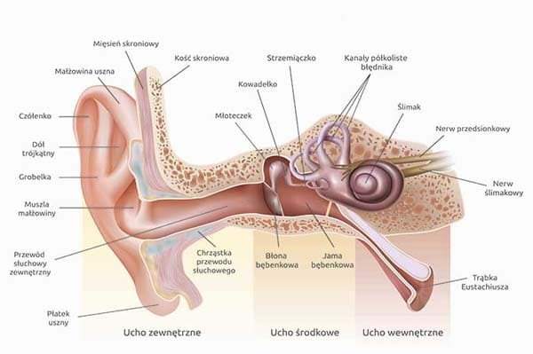
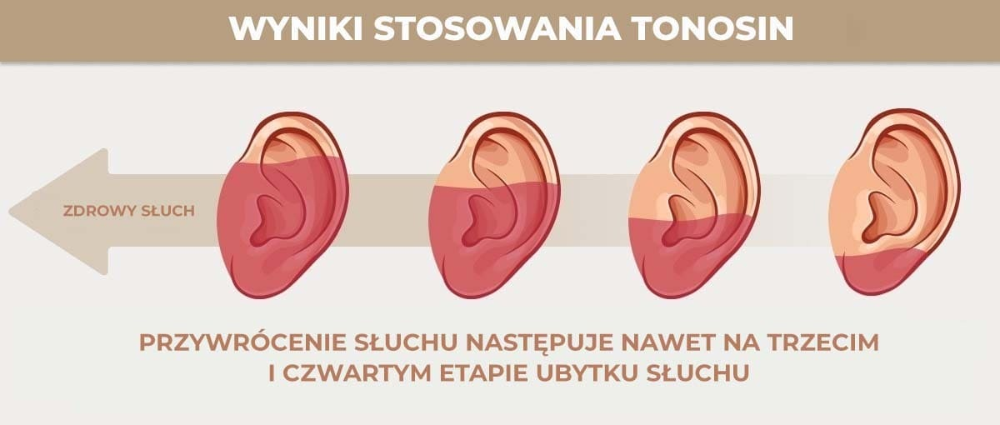

अगर मुझे सिरदर्द, टिनिटस या बहरापन है तो मुझे क्या करना चाहिए? आइए श्रवण हानि के मुख्य लक्षणों को देखें।

बहरापनएक पैथोलॉजिकल स्थिति है जहां सुनने में धीरे-धीरे गिरावट आती है। इस लेख को इसके कारणों, तंत्रों और लक्षणों के बारे में पढ़ें, और यह भी कि अलार्म बजने का समय कब है। आप इस घातक स्थिति की गंभीर जटिलताओं और उपचार के लिए एक आधुनिक दृष्टिकोण के बारे में भी जानेंगे जो सभी के लिए उपलब्ध है।
श्रवण हानि उत्पादकता और जीवन की गुणवत्ता को प्रभावित करती है। श्रवण हानि के स्पष्ट लक्षणों के अलावा, यह समग्र प्रदर्शन को कम करता है और जीवन के सामाजिक क्षेत्र में समस्याएं पैदा करता है।
श्रवण हानि के मुख्य लक्षण हैं:
- भीड़ में आवाजों के बीच अंतर करने में असमर्थता;
- सामान्य सुनवाई हानि;
- सिरदर्द;
- टिनिटस;
- सामान्य कमजोरी, उनींदापन, सुस्ती;
- कम काम करने की क्षमता;
- नींद की गड़बड़ी, अनिद्रा;
- अनुपस्थित-दिमाग;
- चक्कर आना;
- समन्वय विकार;
- उच्च-तीव्रता वाली ध्वनियों के बीच अंतर करने में असमर्थता।
लक्षणों को अनदेखा करने से स्थायी सुनवाई हानि हो सकती है
सुनने की क्षमता बढ़ाने के लिए हम किन घरेलू उपचारों का उपयोग कर सकते हैं?
श्रवण पुनर्वास एक जटिल प्रक्रिया है। यह जीव की सभी प्रणालियों को प्रभावित करता है, जीवन की गुणवत्ता में सुधार करता है।
इस विस्तृत साक्षात्कार में, आप सीखेंगे कि कैसे अपनी सुनवाई फिर से हासिल करें, ढेर सारी समस्याओं से छुटकारा पाएं और एक स्वस्थ जीवन व्यतीत करें।
- बहरापन कितना खतरनाक है?
- लक्षणों को अनदेखा करने के जोखिम क्या हैं?
- श्रवण यंत्र खराब क्यों हैं?
- सेरेब्रल वाहिकाओं, श्रवण और कामेच्छा कैसे जुड़े हुए हैं?
- मैं अपनी सुनवाई खुद कैसे बहाल कर सकता हूं?
इन सवालों के जवाब अमरनाथ गोस्वामी, एक अभ्यास करने वाले ओटोरहिनोलारिंजोलॉजिस्ट और मानद डॉक्टर, नई दिल्ली में सैन्य चिकित्सा अकादमी के ओटोरहिनोलारिंजोलॉजी क्लिनिक के प्रमुख ने दिए।
अमरनाथ गोस्वामीउन्हें दुनिया के सर्वश्रेष्ठ ओटोरहिनोलारिंजोलॉजिस्ट में से एक माना जाता है। वह अद्वितीय श्रवण बहाली तकनीकों के लेखक हैं जो पूरी दुनिया में उपयोग की जाती हैं।
अमरनाथ गोस्वामी को यकीन है कि 40 साल की उम्र के बाद सुनने की देखभाल करना। आपको 89-93 वर्ष की आयु तक अपनी सुनवाई बनाए रखने की अनुमति देता है।
सुनवाई हानि कितनी गंभीर है?
-अमरनाथ गोस्वामी, सबसे पहले किन लक्षणों पर ध्यान देना चाहिए?
- सबसे पहले, सुनवाई हानि हल्की होती है। ज्यादातर लोग लक्षणों पर ध्यान नहीं देते और लक्षण आते-जाते रहते हैं।
सुनवाई हानि के पहले लक्षण:
- टिनिटस
- उच्च स्वर वाली ध्वनियों में अंतर करने में असमर्थता
- माथे और मंदिरों में सिरदर्द
- अचानक दबाव बढ़ जाता है (जब आप अचानक स्थिति बदलते हैं तो यह आंखों में गहरा हो जाता है)
बहरापन का सामना करने पर व्यक्ति को दूसरों के साथ संवाद करने में परेशानी होने लगती है।
बहरापन, जबकि "तीव्र" स्थिति नहीं है, बहुत मुश्किल है। जल्दी या बाद में, यह बहरेपन की ओर ले जाता है, लेकिन इससे पहले, यह व्यक्ति को वर्षों तक पीड़ा देता है, धीरे-धीरे उसके जीवन की गुणवत्ता को खराब करता है।
–हां, दुर्भाग्य से, हमारे नागरिकों को प्रोस्थेटिक्स सुनने के महत्व के बारे में किसी भी तरह से सूचित नहीं किया जाता है।
और यह उनकी गलती नहीं है। इसके बारे में कहने की जरूरत नहीं है, क्योंकि 100 में से 99 डॉक्टर हियरिंग एड या नॉन-वर्किंग टैबलेट लिखते हैं।
विकसित देशों में: संयुक्त राज्य अमेरिका, कनाडा और जापान, 11 वर्षों से सुनने की समस्याओं के इलाज में नई पीढ़ी की दवाओं का उपयोग किया गया है।
लक्षणों को अनदेखा करने के जोखिम क्या हैं?
- यदि आप बहरापन के लक्षणों को अनदेखा कर दें तो क्या होगा?
- दवा उपचार की परवाह किए बिना बीमारी केवल खराब होगी। हां, हियरिंग एड लगाकर या सर्जन से सलाह लेकर इसे "कम" किया जा सकता है, लेकिन इसका कारण गायब नहीं होगा।
एक सुनवाई सहायता एक विकल्प नहीं है। यह केवल एक "बैसाखी" है जो आपको एक विकलांग व्यक्ति में बदल देती है समस्या को अनदेखा करने से होता हैस्थायी सुनवाई हानि.
श्रवण यंत्र खराब क्यों हैं?
- क्या श्रवण यंत्र वास्तव में अच्छे से ज्यादा नुकसान करते हैं?
श्रवण यंत्र समस्या का समाधान नहीं करता है। वे सिर्फ समस्या को भूलने में मदद करते हैं जबकि सुनवाई बिगड़ती रहती है। जब वह बहरा हो जाता है तो एक व्यक्ति केवल समय बर्बाद नहीं करता है।
मस्तिष्क वाहिकाओं, श्रवण और कामेच्छा के बीच क्या संबंध है?
- सुनने की हानि के साथ महिलाएं अक्सर वजन क्यों बढ़ाती हैं, पुरुष जीवन शक्ति खो देते हैं और प्रोस्टेटाइटिस प्राप्त कर लेते हैं, और मस्तिष्क वाहिकाएं बंद हो जाती हैं?
-वाहन और श्रवण एक दूसरे से अविभाज्य रूप से जुड़े हुए हैं। जब मस्तिष्क की वाहिकाएं प्लाक से 'भरी हुई' हो जाती हैं, तो मस्तिष्क को कम पोषक तत्व प्राप्त होते हैं। इसलिए, सुनने की हानि, यौन निराशा और अन्य समस्याएं।
पर्याप्त पोषक तत्व नहीं मिलने पर मस्तिष्क क्या करता है?
1. सोचता है कि हम भूखे हैं और हमें खाना खिलाते हैं।
लेकिन आप कितना भी खाएं, बंद रक्त वाहिकाएं पोषक तत्वों को आपके मस्तिष्क तक पहुंचने से रोकती हैं। और उन्हें स्टोर करने के लिए जगह होनी चाहिए। इसलिए शरीर उन्हें वसा में परिवर्तित करके रखता है।
2. "भुखमरी" मोड में, हमारा मस्तिष्क सोचता है कि हम मर रहे हैं, इसलिए यह उन कार्यों को बंद कर देता है जो जीवित रहने के लिए "अनावश्यक" हैं।
भूखे मस्तिष्क को प्रजनन कार्य की आवश्यकता नहीं होती है, इसलिए शक्ति और कामेच्छा के कार्य सीमित होते हैं। पुरुष हार्मोन टेस्टोस्टेरोन का उत्पादन कम हो जाता है। यह बदले में, प्रोस्टेट ग्रंथि के विस्तार और प्रोस्टेटाइटिस के विकास को भड़काता है।
पुनर्जनन कार्य बहुत ऊर्जा गहन है और मस्तिष्क ""इसे बंद कर देता है"" बेहतर समय की प्रतीक्षा कर रहा है। और निश्चित रूप से, यह हमारे विषय पर भी लागू होता है - परिवर्तन पूरे जीव को प्रभावित करते हैं।"
रक्त परिसंचरण को कैसे बहाल करें और रक्त वाहिकाओं को मजबूत करें?
- क्या अपने दम पर सुनवाई बहाल करना संभव है?
- हां। यह मुश्किल नहीं है, लेकिन इसके लिए धैर्य और अनुशासन की आवश्यकता होती है। लेकिन यह इसके लायक है और यह कई बार भुगतान करेगा।
का अनूठा सूत्रीकरण विकसित किया गया है। एनआईआरसी संस्थान के विशेषज्ञों ने एक ऐसा उपकरण बनाया है जिसका आज बाजार में कोई एनालॉग नहीं है। पूरी तरह से सुरक्षित है, इसका कोई साइड इफेक्ट नहीं है और इसे बिना चिकित्सकीय देखरेख के इस्तेमाल किया जा सकता है।
सुनवाई हानि पर का जटिल प्रभाव पड़ता है:
- कोलेस्ट्रॉल कम करता है
- दर्द और सूजन से राहत दिलाता है
- सामान्य सुनवाई बनाए रखता है
का उपयोग करने के प्रभाव:
1.5 महीनों में, का उपयोग करके, सुनवाई 99.71% तक बहाल हो गई।
, सक्रिय संघटक के लिए धन्यवाद, लगभग 100% सुनवाई बहाल करता है।
हियरिंग एड के सामान्य कामकाज को बहाल करता है। यह एक श्रृंखला प्रतिक्रिया का कारण बनता है जो पूरे शरीर का पुनर्जनन शुरू कर देगा।
शरीर को कैसे प्रभावित करता है?
- 3 चरणों में काम करता है:
1. यह शरीर को ग्लूकोज से संतृप्त करता है और ऊर्जा देता है, शरीर पर सकारात्मक प्रभाव डालता है, कोलेस्ट्रॉल कम करता है
2. दर्द और सूजन से राहत देता है, कान पुनर्जनन का समर्थन करता है, पुराने जीवाणु कान, नाक और गले के संक्रमण से लड़ता है, सुनने की तीक्ष्णता बढ़ाता है
3. ऑरिकल्स को उचित रक्त की आपूर्ति सुनिश्चित करता है, क्षतिग्रस्त होने की स्थिति में उपास्थि के निर्माण और पुनर्जनन में भाग लेता है
- कितनी बार और कितने समय तक का इस्तेमाल करना चाहिए?
- पाठ्यक्रम की अवधि 1.5 महीने है, और गंभीर सुनवाई हानि के मामले में यह 2 महीने है। का प्रयोग दिन में दो बार करें।
"महत्वपूर्ण! परीक्षण दिखाते हैं किऔरउपचार शुरू करने का यह सबसे अच्छा समय है। औसत तापमान का स्थिरीकरण शरीर में चयापचय प्रक्रियाओं को तेज करता है और उपचार प्रभाव को बढ़ाता है। वर्ष के किसी भी अन्य मौसम की तुलना में उपचार 37% तेज है।
कमी और लाभ कार्यक्रम
- जहाँ तक हम जानते हैं, अधिकांश फार्मेसियों से गायब हो गया है? क्यों? अब हमें क्या करना चाहिए?
- दुर्भाग्य से हाँ। इस वर्ष की शुरुआत से, की आपूर्ति अब फार्मेसियों को नहीं की जाती है।
इसका कारण फार्मेसी श्रृंखलाओं का लालच था, जो बेची गई प्रत्येक वस्तु पर के निर्माता से भारी कमीशन की मांग करता था! पहले से ही भारी मार्क-अप (देश में कुछ फार्मेसियों में की कीमत तीन सौ ज़्लॉटी (!)) द्वारा निर्माता की कीमत में वृद्धि करके, फार्मासिस्ट निर्माता से एक अतिरिक्त शुल्क देना चाहते थे।
फार्मेसियों ने दावा किया कि अतिरिक्त शुल्क उन्हें जीवित रहने की अनुमति देता है। आखिरकार, एक ऐसा उत्पाद है जिसे आप हर कुछ महीनों में एक बार खरीदते हैं। और इसके अलावा, एक बार जब किसी व्यक्ति को के साथ उनकी सुनवाई वापस हो जाती है, तो उन्हें किसी भी दवा की आवश्यकता नहीं होती है जो वे पहले नियमित रूप से ले रहे थे! लोग गोलियां लेना बंद कर देते हैं और कान दर्द के लिए दवाएं खरीदना बंद कर देते हैं। वे श्रवण यंत्रों की अपनी खरीद को काफी कम कर देते हैं। और इससे फार्मेसियों को नुकसान होता है। इसलिए वे की बूंदों के लिए उच्चतम संभव कीमत की मांग करते हैं।
नतीजतन, के निर्माता ने सभी फार्मेसियों के साथ अपने अनुबंध को समाप्त कर दिया है और विशेष रूप से ऑनलाइन वितरण के लिए स्थानांतरित कर दिया है। वास्तव में, यही करना सही है। इसके बारे में सोचें: आपको बिक्री स्थान के लिए किराए का भुगतान नहीं करना पड़ता है, और आपको उन तक पहुंचने के लिए फार्मेसियों को रिश्वत देने की आवश्यकता नहीं है। यही कारण है कि अब फार्मेसियों में बेचे जाने की तुलना में बहुत अधिक किफायती है।
अधिमान्य कार्यक्रम "स्वस्थ सुनवाई"
हमारे संस्थान ने नेशनल ओटोरहिनोलारिंजोलॉजी मेडिकल रिसर्च सेंटर के साथ मिलकर के निर्माता की मदद से एक ऑनलाइन दवा परियोजना के हिस्से के रूप में एक लाभकारी कार्यक्रम शुरू किया है।
हम उत्पाद छूट जीतने के लिए लॉटरी चला रहे हैं (लॉटरी लेख के अंत में होगी)। हमारे पाठकों में से कोई भी छूट प्राप्त कर सकता है, लेकिन केवल वही लोग इसका लाभ उठा सकते हैं जिन्हें वास्तव में दवा की आवश्यकता है। सबसे अच्छी बात यह है कि छूट 50% जितनी अधिक है, जिसका अर्थ है कि सबसे भाग्यशाली पाठक करने में सक्षम होंगे की कीमत पर उत्पाद प्राप्त करें!
- छूट प्रणाली का उपयोग करने की अनुमति किसे है?
- छूट कार्यक्रम के तहत प्राप्त करने के लिए, आपको आवश्यकताओं में से एक को पूरा करना होगा:
छूट कार्यक्रम के माध्यम से पर 50% छूट कौन प्राप्त कर सकता है:
- देश के किसी भी क्षेत्र से 40 वर्ष से अधिक आयु के पुरुष और 45 वर्ष से अधिक आयु की महिलाएं
- श्रेणी I-II विकलांग व्यक्ति। उम्र की परवाह किए बिना
- उपरोक्त श्रेणियों के लोगों के रिश्तेदार और मित्र
- छूट कार्यक्रम कब तक चलेगा?
–प्रचार केवल आज 23:59 . तक ही मान्य हैशामिल। प्रत्येक चरण के लिए 30,000 पैकेज उपलब्ध हैं। और वे 3-4 सप्ताह के भीतर पूरी तरह से समाप्त हो जाते हैं। और यह टीवी और रेडियो पर बिना किसी विज्ञापन के है। लोग एक दूसरे को जानकारी देते हैं, दोस्तों और रिश्तेदारों को सलाह देते हैं। हमारे लिए भी यह आश्चर्य की बात थी कि के बारे में जानकारी इतनी जल्दी फैल जाएगी।
इसलिए यदि आप भाग्यशाली हैं और समय सीमा से पहले इसे बनाने का प्रबंधन करते हैं, तो मैं रैफल में भाग लेने और जल्द से जल्द आपकी छूट प्राप्त करने की सलाह देता हूं!
12 घंटे पहले जोड़ा गया | संपादक का नोट: महत्वपूर्ण संदेश!कार्यक्रम आज के अंत तक केवल 23:59 बजे तक चलता है। प्रचार के अंत तक, मूल उत्पाद आधिकारिक ड्रा के माध्यम से उपलब्ध है, जिसमें 50% तक की छूट है! प्रचार पैकेजों का वर्तमान संतुलन:77 पीसी
धन्यवाद, आपकी टिप्पणी को मॉडरेशन के लिए भेज दिया गया है और सत्यापन के बाद प्रकाशित किया जाएगा।